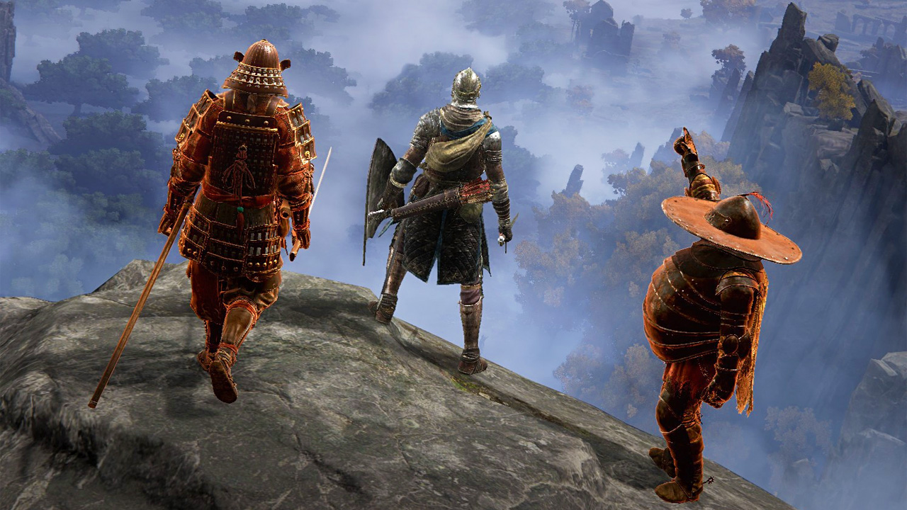

Online Elements
Recieving Help
unlike many games these games have a unique online experiance allowing you to reive help from strangers wishing to help
Gaining a Cooperator
these randoom individual is called to your game world either using a specific item or the game itself provides your npc support
Asking for Help
not everyone is cut out to deal with hard battles so this system is in place design wise and playbase wide to tell players its okay to ask for help when you struggle
